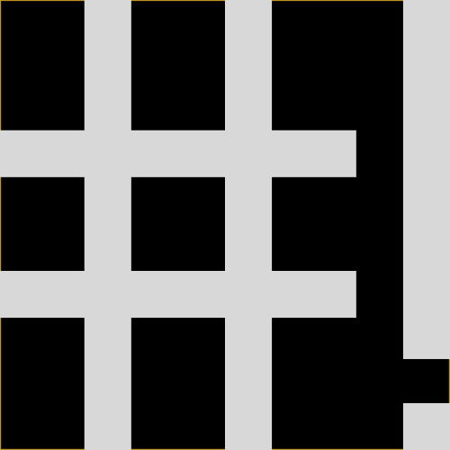

Even more minimal with CrunchBang Linux
I seem to have become the Littlest Hobo of Linux distributions. I still like Lubuntu, which is perhaps the best known of half a dozen configured distribution disk images based on the fast and efficient LXDE.
However, I accidentally selected an option in the login manager of Lubuntu that made my computer boot into plain Openbox, and I was hooked.
Then in May 2003, I noticed the release announcement of CrunchBang 11 “Waldorf” (which coincided with Debian 7 “Wheezy”) and installed it onto an old machine.
CrunchBang Linux. is even more minimal than Lubuntu, using the Openbox window manager, like Lubuntu does, however Crunchbang does not put any desktop environment on top.
I initially just installed it for research purposes, I wanted to learn what an Openbox distribution looks like when properly configured. I thought I was just picking up ideas that I would be able to bring back to my Lubuntu computer. (It turns out that Crunchbang is pretty much the only Openbox distribution.)
The almost completely empty grey screen felt a bit depressing at first but it subconsciously grew on me; when you have all your applications open, the theme is a tasteful yet minimalist frame, the OS completely gets out of the way.
The key combination Super and Space (Super is also known as Command on the Apple Mac or the Windows key on Microsoft) brings up the main menu wherever the mouse cursor is (you can also use right click). This is especially beautiful on multiple monitors as you do not need to move your focus to the bottom corner of the left most monitor.

The level of configuration and integration is really quite stunning for such a small team. However, once up and running, you are basically just running Debian. Apart from a few packages like the themes as so on, everything comes straight from the Debian stable repositories. Indeed Crunchbang might as well just be one of the default Debian disk images.
After using some form of Ubuntu or other for the last seven years or so, I was initially a bit hesitant to install a Debian based system on my desktop. However, I need not have worried, the difference between Debian and Ubuntu is rather marginal and certainly far less than my previous jumps from Slackware to Redhat to Gentoo to Ubuntu.